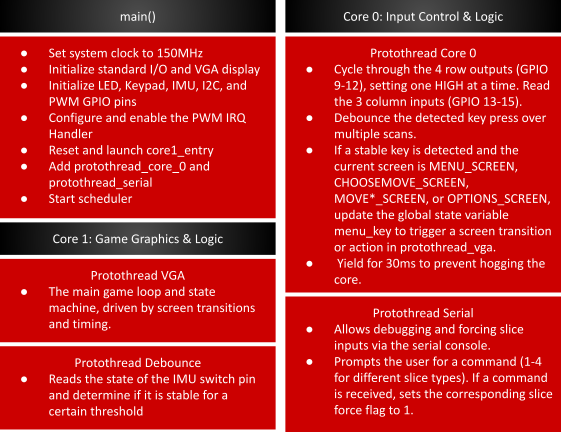
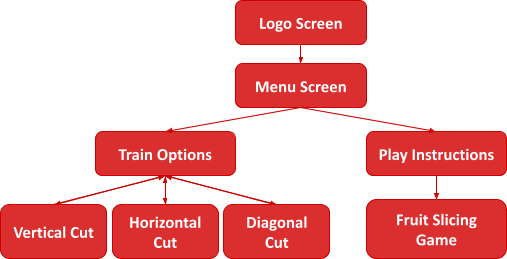
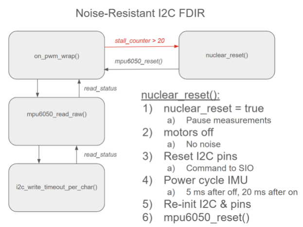
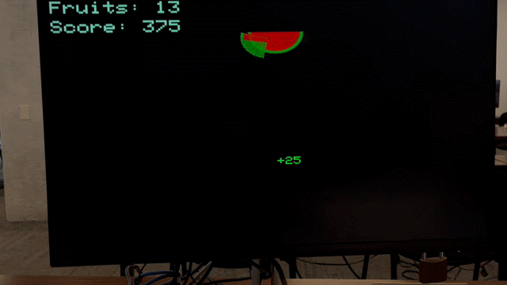
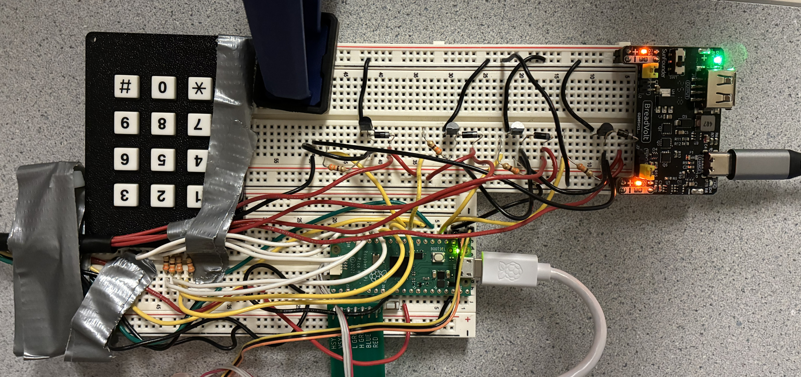
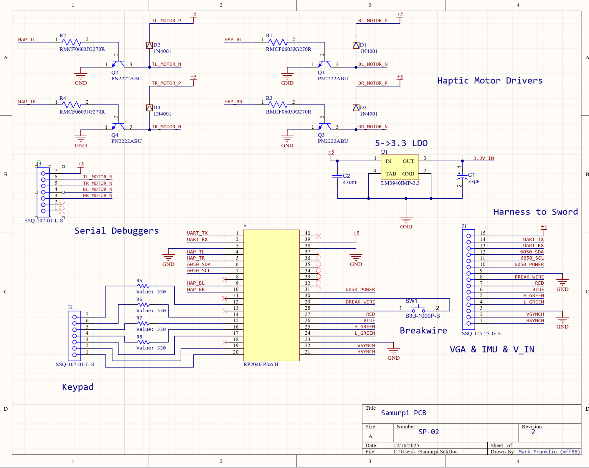
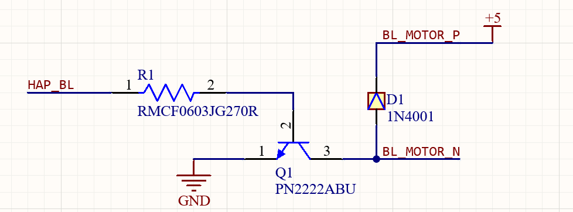
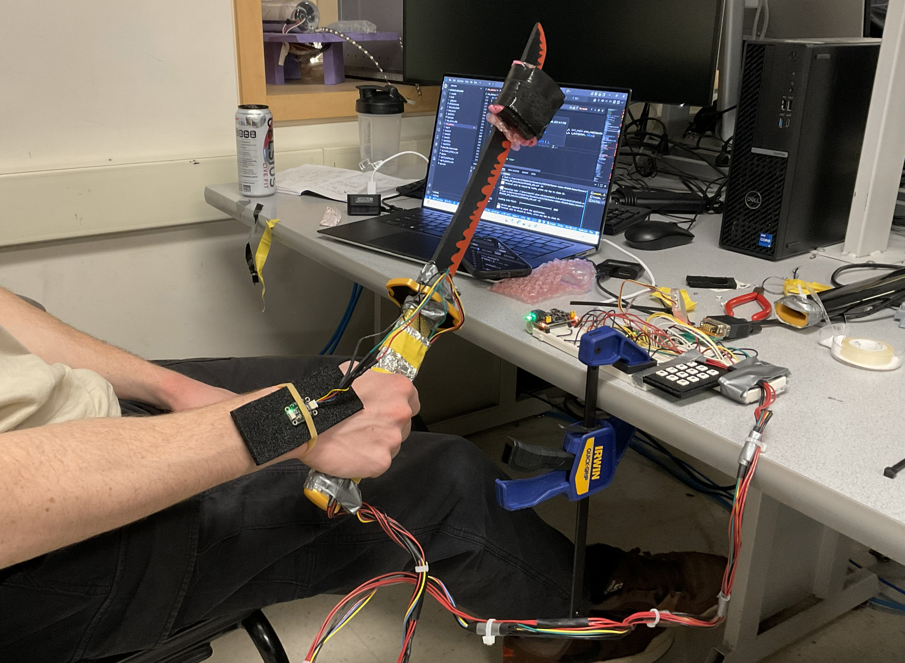
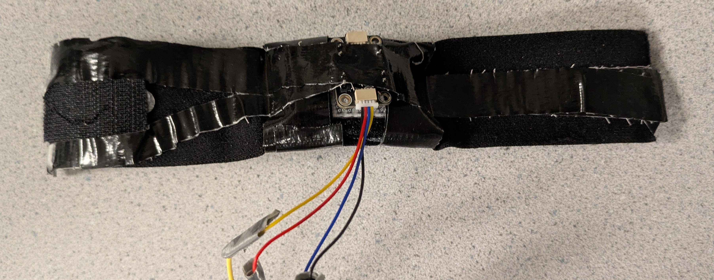
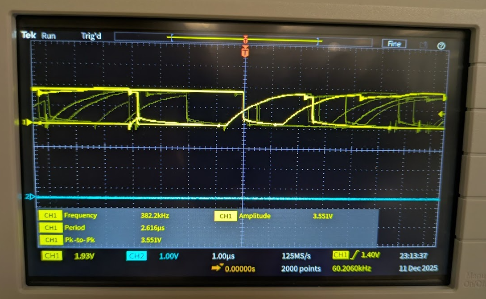

Samurpi is a sword-training system that uses IMU sensing and real-time haptic feedback to teach proper sword technique. An IMU embedded in a custom wristband tracks the user’s motion, while distributed vibration motors provide intuitive feedback as the user holds the sword. Through structured training and fast-paced game modes, users can practice authentic techniques and build reaction speed in an engaging, interactive environment. We created this project to explore how sensing, haptics, and game design can make learning complex physical skills more accessible, engaging, and effective.
We were motivated to take on this project by a shared interest in learning sword fighting and a passion for designing interactive gameplay experiences that promote active learning. The project was also inspired by Fruit Ninja, a game we both enjoyed growing up. Rather than slicing virtual objects on a screen, we sought to elevate the experience by introducing a handheld sword with vibrating motors, creating an engaging and immersive way to develop coordination, reflexes, and motor skills through interactive sword training. While our work focused on gameplay, the system could also be adapted to support self-defense training.
State estimation
Adapted from Lab 3, a complementary filter was used to synthesize the MPU-6050’s gyro and accelerometer measurements. This technique combines low-passed accelerometer data with high-passed gyroscope data to take advantage of the zero-bias accelerometer data and the minimal-noise gyroscope data. Without a magnetometer, we were not able to synthesize an absolute position for the z-axis (yaw) measurement, as in our design this axis was aligned with the gravity vector. As such, we could not use the accelerometer data in the complementary angle calculation. We instead integrated the gyro measurements for an approximate z-axis state estimation.
\[ \theta_{\text{est}} = 0.99 \, (\theta_{\text{prev}} - \Delta \theta_{\text{gyro}}) + 0.01 \, \theta_{\text{accel}} \] To measure the rate of change of each angle, we chose to dynamically measure the angle delta as per the below: \[ \omega = \frac{\theta - \theta_{\text{prev}}}{t_{\text{elapsed}}} \] t_elapsed could not be reduced to a constant as our issues with haptic motor noise coupling to the I2C IMU communication (described more below) could produce random ~25 ms delays between measurements. As such, we used time_us_64() to track the time deltas and dynamically adjust t_elapsed. While we could have used the raw gyro measurement for angular velocity, we opted for a sensor fused velocity using the complementary angles as we hoped to minimize the gyro drift’s contamination of the data. Vibration from the haptic feedback motors had a profound effect on the accelerometer accuracy, acting to accelerate the damped proof mass system and distort the sensor’s measurement of gravity. To fix our absolute position estimation (complementary angles) we moved the IMU off the sword, producing an accurate angular velocity. In retrospect, gyro velocities would have likely been sufficient for our project. Still, our approach was an interesting learning experience in the ultra-broad field of sensor fusion. We also ran into a bug wherein large angular velocity spikes occurred as the complementary angles “wrapped around” axes, eg from +180° to -180° due to the atan2 usage. We were able to fix this, and cap any other excessive rate by clamping the angle deltas to 1500 °/s - a realistic human maxima in our setting.
Haptic Feedback
Early in the project design, we debated whether the haptic feedback should be used as a reward or penalty function, i.e. would it activate as the user exemplified correct or incorrect behavior? After setting up a simple demonstration of each, it became clear that it was much more intuitive to receive vibration as a reward function, which mirrors the practices of teachers, coaches, and mentors everywhere - beginners need positive feedback to establish good practices.
We then designed a proportional controller (with configurable coefficients) against the desired ωx, ωy, ωz and θy as per the below:
| Parameter | Condition | Coefficient | Purpose |
|---|---|---|---|
| \(\omega_x\) | \(\omega_x > 200^\circ/\text{s}\) | max_vibe/200 | "Cutting power" |
| \(\omega_y\) | \(\omega_y < (1/3) \omega_x\) | max_vibe/200 | Min roll in wrists |
| \(\omega_z\) | \(\omega_z < (1/4) \omega_x\) | max_vibe/200 | Min off-axis velocity |
| \(\theta_y\) | \(|\theta_y - \theta_d| < 10\) | max_vibe/45 | Vertical vs Horizontal vs Diagonal |
ωy and ωz conditions were given relative to ωx,as hardcoding them left our reward function vulnerable to axis leakage - wherein the user’s wrist strap position caused the IMU’s axes to lose some alignment with the sword. At first, we tried manually tuning the coefficients, but this quickly became time consuming. We instead use each coefficient in terms of max_vibe (pwm output to the haptic motors) such that vibration would reach zero at a desired “max_error”. For example, ωx,penalization will produce zero vibration if the user swings the sword at ~= 0 °/s, and ωy penalization will do the same if ωy = ωx-desired. This produced a nice objective function that required strong performance from the user without being overly harsh. Finally, the θd is set by the training state machine: 180° for vertical slice, 90°|| 270° for horizontal slice (handles left vs. right-handed users), or 135°|| 225°for the diagonal slice.
Intuitively, it would make sense to sum the errors to balance your correction of each factor. The downside of this approach is that it allows strong conditions to “cover up” weak conditions. For example, if the user is holding the sword in the right place, but not moving it at all, they would receive nearly full vibration! Instead, we use the max correction. Just as a youth coach teaching a team member, the algorithm corrects for only the most important teaching at any one time.
Real-Time Slice Classification
As mentioned below, we weren’t able to fully integrate this functionality to our Fruit Ninja game mode. We did get this algorithm fully functional (in isolation) and it will be submitted in our final code.
To bring the learning process full-circle, we scoped in a game mode that would use the slice types and objective function described above in a fast-paced test of muscle memory and reaction speed. Effectively, the pattern of falling fruits (horizontal, vertical, or diagonal combination) would inform the user of the required slice type. We would then detect and classify the user’s action as per the reward structure described above, and cut the fruits if it met a minimum score. In doing so, we were training the user to maintain proper form in a high-speed environment.
This approach proved fairly robust, and we could tune response time vs. instability by increasing or decreasing the consecutive success/failure thresholds. There were some adjacent mis-classifications (vertical vs. diagonal, diagonal vs. horizontal) that could be fixed by a rigid IMU mounting, but otherwise this classification performed well.
Fruit Rotation
Our drawRotatedPixel function rotated a pixel offset (dx, dy) about a center point (cx, cy) by an angle before drawing it. Mathematically, we applied the standard 2D rotation matrix
\begin{bmatrix} \cos \theta & -\sin \theta \\ \sin \theta & \cos \theta \end{bmatrix}to the original offset, computing the rotated coordinates:
\begin{aligned} rdx &= dx \cos \theta - dy \sin \theta \\ rdy &= dx \sin \theta + dy \cos \theta \end{aligned}The rotated pixel was then translated back to screen coordinates by adding the center position:
\begin{aligned} px &= cx + (dx \cos \theta - dy \sin \theta) \\ py &= cy + (dx \sin \theta + dy \cos \theta) \end{aligned}In our code, we implemented these equations using fixed-point math and then converted back to integer pixel coordinates before calling drawPixel(px,py,color).
As shown below, our software architecture leveraged both cores and multiple threads to balance high-speed graphics with responsive hardware I/O. Core 0 functioned as the system interface layer, handling debounced keypad matrix scanning and a serial debugging console used to trigger game events. Core 1 was dedicated to the application’s computational workload, executing the main VGA game loop, game state machine, and IMU sensor processing.
The gameplay flow was structured as a hierarchical state machine that transitioned from an initial Logo Screen into a central Menu Screen. From this menu, users could navigate through two primary branches: a Play Instructions path that led into the main Fruit Slicing Game, or a Train Options menu. This training module allowed players to practice specific mechanics through dedicated sub-modes for Vertical, Horizontal, and Diagonal Cuts.
Early in the project, we discussed mounting the microcontroller on the sword and using Bluetooth to communicate to a second microcontroller on the bench, which would stream the VGA graphics. This would have allowed us to reduce the extensive wire harnessing and limit the effect of the noise coupling onto the long I2C wires. We ultimately opted against this idea as there was limited space to mount all the components safely on the sword, and we weren’t sure of the complexity required to implement the GATT server and client. In retrospect, after learning more about the GATT implementation in class, we believe it would have been beneficial to implement Bluetooth and decrease the wire harnessing.
We also debated purchasing a more complex IMU that includes a magnetometer, which would have allowed us to get absolute position in the yaw axis. We similarly decided against this as we were already familiar with the MPU6050 and our state estimation primarily relied on angular velocities.
Perhaps our most important tradeoff, and one we certainly would do differently if we were to build this project again, was the co-location of the IMU and haptic motors. At the time, it made sense: you want to rigidly mount the IMU, centralize the components for the harnessing, and have the haptic feedback directly integrated into the sword handle. As covered elsewhere in the report, we ran into mechanical noise issues (vibration ruining the accelerometer data) which necessitated moving the IMU onto a wrist strap off the sword. Since the IMU was no longer rigidly mounted, and not completely aligned with the sword, we had to build sizable tolerances into our state estimation and reward function. This decision was made late in the design process, as we were trying to fine-tune our state estimation, so we had limited options to pivot. A much stronger solution would have been to instead move the haptic feedback motors off the sword, and leave the IMU rigidly mounted.
While no existing patents/copyrights were used in the inspiration or creation of our device, we have researched existing implementations to demonstrate the applicability and breadth of our work:
As will be expanded upon below, we had severe issues talking to the MPU-6050 through I2C while the haptic motors were turned on. The combination of motor noise and the long I2C cable run (pseudo-antenna) caused the I2C communication to get permanently “hung” regularly, with a period of ~ 1 - 10s depending on the vibration level. This was a complete blocker for our project, and the problem could not be easily avoided as the whole purpose of our project was the combination of IMU state estimation with the haptic feedback. After trying several solutions (separation, shielding, non-blocking calls, timing), we finally had luck with the FDIR (fault detection isolation and recovery) described below. It is of note that something that we could previously take for granted in Lab 3 (I2C communication) because a sizable chunk of our final project. Our solution is a “project within a project” and showcases a method to use non-rugged communication protocols in rugged environments. While hardware limitations can require the use of certain communication protocols, it is much easier to adopt a more rugged communication protocol in the first place. In FSAE, we use CAN bus (twisted pair, shielded, bus architecture) in the presence of much more strenuous inverter and electric motor noise with no issues.
As seen above, we modified mpu6050_read_raw() to use non-blocking timeout read and write functionality, with an experimentally-determined timeout parameter of 100 µs per char. These functions return a status code, which is converted to a boolean (logical and of the two reads and two writes within mpu6050_read_raw) and returned back to the ISR. If enough successive failures are detected (to ignore simple bit flips), we declare the bus crashed and move to nuclear_reset(). nuclear_reset() uses a boolean flag to ensure the IMU doesn’t try to estimate state or run the reward function on the user when the program cannot communicate with the IMU. Our reset function then follows the steps above to fully reset the system. The 25 ms of blocking delays are quite costly, and we experimentally minimized these delays (decreasing until the IMU was no longer properly resetting and was remaining stuck). The 5 ms delay before powering on the IMU allows for any latent motor noise (spin down, capacitance in the circuit) to dissipate, and the 20 ms delay after powering on the IMU allows for the IMU to boot up. If we immediately try to write to the IMU with mpu6050_reset() while it is booting up, the write will fail, and the bus will crash yet again.
To implement our Fruit Ninja mode, we created a PLAY_SCREEN state within our VGA graphics state machine and included a separate header file called`drawfruits.h` to handle fruit rendering and behavior. Within this state, the code continuously checked for slice triggers corresponding to different sword motions. When a slice occurred while a fruit was active, points were calculated and combo logic was updated to reward consecutive slices of the same fruit. Bonus points and visual feedback were provided through score and combo popups, and the appropriate fruit halves were spawned based on the slice direction. The positions of the main fruit and all active halves were then updated and redrawn each frame, game statistics were refreshed, and a new fruit was spawned once all previous pieces became inactive, ensuring smooth and continuous gameplay.

To create the draw fruit functions, we created two primitive helpers called drawEllipse() and drawRotatedPixel(), which allowed fruits and their halves to be rendered with rotation. We created a dedicated draw function for each fruit type (apple, watermelon, orange, blueberry). In addition, every possible slice orientation (vertical, horizontal, and diagonal) was handled by specialized half drawing functions selected through an attribute called half_id in drawBoid().
Gameplay objects were represented as Boid structs, with spawnMainFruit() initializing a new fruit and the various spawnHalves*() functions creating animated halves after a slice by assigning velocities, rotation rates, and slice IDs. Motion and gravity were applied in updateBoid(), which deactivated objects once they fell offscreen. Rendering was double-buffered manually by erasing previous positions with eraseBoid() and redrawing updated ones with drawBoid(). The eraseBoid() function essentially drew a large black rectangle on the screen.
Scoring and feedback were handled through the pop-up logic: getFruitPoints() assigned base scores per fruit, getComboBonus() rewarded consecutive identical slices, and addPopup() and addComboPopup() generated floating score and “COMBO!” text that was animated by updatePopups() and rendered in drawPopups(). UI elements such as score fruit count, instructions, and combo explanations were drawn with drawStats(), drawInstructions, and drawCombos().
To allow users to slice the fruit with the sword, we implemented a function called detect_slice() that coordinated IMU acceleration and angular velocity measurements to identify intentional slicing motions. The function first enforced a cooldown period using last_slice_time_ms to prevent multiple slices from being triggered by a single swing. It then computed the total acceleration magnitude from the filtered IMU axes (filtered_ax, filtered_ay, filtered_az) and rejected small or slow movements by requiring this magnitude to exceed a specific threshold. Next, the function examined changes in orientation using complementary-filtered angular velocity deltas and ensured that at least one axis exceeded the minimum angular speed threshold. Finally, by comparing axis dominance using AX_DOMINANCE, the code classified the motion as either a vertical or horizontal slice and set the corresponding slice flag (force_slice_vertical or force_slice_horizontal), which was later consumed by the PLAY_SCREEN state to trigger fruit slicing and animations.
Circuitry
 The breadboard implementation and corresponding Altium schematic for our final implementation can be seen above. There are some minor differences between the schematic and breadboard as the schematic is meant for a printed circuit board (PCB) implementation. The usage of the breadboard kept our project easy to debug and iterate, but as the complexity grew, it became clear that our work was better scoped for a PCB. Pulling together hardware from each of our three labs, our system uses a keypad for game operation, VGA display for the graphics, MPU6050 for IMU state estimation, transistor motor drivers for the DC haptic motors, and a battery power supply for the haptic feedback. Keypad and VGA hardware is unchanged from prior labs, and for the purpose of brevity, will not be covered here.
Our IMU implementation for this lab was notable in that noise issues necessitated being able to dynamically power cycle the IMU if it crashed. As such, our MPU6050 was powered off GPIO 26, which was configured to 12 µA (max) drive strength. This made it easy to toggle the IMU’s power with GPIO_put and ended up saving our project in light of the noise issues.
As seen above, the motor driver circuitry is similar in principle to that used in lab 3. PWM from the RP2040 to the base of the PN2222 NPN BJT allows the motor drive low-side current to sink collector to emitter (ground). The flyback diode protects the BJT from the motor’s inductive kick, and the resistor limits current through the base of the BJT.
The haptic motors were attached directly to the sword handle, taped in place, and covered with tinfoil to provide a measure of electrical shielding. Two motors were positioned on each side of the handle, and with more time, we would implement spatial haptic feedback - directing the user towards proper form by sending different PWM levels to each of the four haptic motors. Directly above the hilt are the two orange breakwires. This functionality has one wire connected to GPIO 22, which is internally pulled up, and the other to ground. The wires are twisted together across a simple holster; when the user pulls the sword from the holster, the wires will break contact, GPIO 22 will be pulled high, and the program will start. All wiring used wire-to-wire solder joints, heat shrink, and strain relief (zip ties) to minimize the risk of wires coming out or breaking during operation. Our only issues in this area were breakages in the 28 AWG wire to the IMU.
The wrist strap itself was designed with comfort and usability in mind. A velcro strap formed the primary structure, and 3M Dual Lock was used to fasten the strap. Foam (the type used in packaging ICs/microcontrollers) was used to mount the IMU, and duct tape held the whole assembly together. As previously mentioned, future iterations would use a similar wrist strap design, but would hold the haptic motors, not the IMU.
Working off the schematic above, we opted to create a PCB implementation of our circuitry as it would be a much more reliable and compact hardware implementation moving forward. The two-layer board is designed on FR4 dielectric, and features a ground pour on both layers (which would help with signal integrity). Simple header sockets were used for input and output connections, but future rev (as the project leaves the prototyping phase) would use proper wire-to-board connectors that are less likely to pull out or break. We upsized the haptic motor traces to allow us to move to higher current motors in the future, and we used simple through-hole and 0603 SMD components that would be easy to bring up by hand.
During hardware development, we initially mounted the IMU directly on the sword handle alongside the four vibration motors. Through testing, we discovered that operating the motors introduced significant interference into the IMU measurements. After repurposing code from the PID controller developed in Lab 3, we observed that when the motor battery pack was disconnected, the IMU data behaved as expected in response to controlled movements. However, once the motors were powered on, the system often became unstable, occasionally crashing or producing highly corrupted and unusable IMU data. In an attempt to mitigate this issue, we relocated the IMU to the sword blade, placing it as far from the motors as possible, but this change did not resolve the problem, as vibrations still propagated through the sword structure and electrical noise still crashed the sensor. This behavior was caused not only by mechanical vibrations coupling into the IMU, but also by electromagnetic interference and power supply noise generated by the motors. The motors’ high current draw and switching behavior likely introduced voltage fluctuations and return-path noise, which disrupted the IMU sensors and interfered with reliable communication, ultimately making accurate motion sensing impossible in this configuration. Ultimately, we designed an adjustable wristband onto which the IMU was mounted, completely separating it from the motor system. This solution successfully addressed the noise issues and allowed us to obtain stable, reliable motion measurements that accurately reflected the user’s sword movements during gameplay.
In our Fruit Ninja–style game, our original goal was to analyze the user’s sword motion by tracking changes in angular velocity and orientation, extracting features such as speed, duration, and cutting plane, and comparing these features against predefined templates for common katana strikes. To support this, we implemented several scripted fruit-spawn patterns. The spawnThreeConsecutive function released three fruits sequentially to prompt a vertical cut, spawnThreeSimultaneous dropped three fruits at once to encourage a horizontal cut, and spawnTripleDiagonal arranged fruits along a diagonal to elicit a diagonal strike. A separate spawnRandomPattern function selected among these patterns to vary gameplay and test different motions.
To evaluate the user’s performance, we developed a motion-classification function that determined the type of cut executed based on IMU data, while filtering out noise and small unintentional movements using time- and magnitude-based thresholds. Although this approach was functional in isolation, we ultimately chose not to present this version of the game due to difficulties integrating the motion-classification logic reliably with the real-time fruit animation system.
We used Gemini to generate the character sprites that visually represent each sword motion in our training mode. We also used ChatGPT to assist in creating a Python script that converted these images into C arrays, which were then stored in separate header files. Additionally, we consulted AI tools for high-level guidance when debugging certain issues; however, we did not directly copy or integrate any AI-generated code into our final project implementation. All code included in the appendix is our own.
Qualitatively, our I2C data traces deviate (more than expected) from ideal square waves primarily due to the long wire lengths in the sword harnessing. This parasitics, dominated by series inductance from the long cables resist changes in the signal and produce the behavior seen below.
Safety was a key priority in our design. The system relied on low-voltage electronics and haptic motors, avoiding the use of lasers or other high-power components that could pose a risk to users. All wiring and sensors were properly insulated and securely fastened to prevent injury. Additionally, the sword blade was made of wood, and care was taken during practice and demonstrations to remain aware of surrounding people and lab equipment.
Our sword setup was designed to be straightforward and user-friendly. Sensors were integrated into the sword handle so that users could receive haptic feedback simply by holding the sword as intended. While we initially planned to mount the IMU directly on the sword, we ultimately developed an adjustable wristband that allowed users to wear the IMU on their wrist. This approach worked effectively as long as the user maintained a straight and stable arm orientation. The wristband design incorporated a Velcro strap to fit different arm sizes, along with a foam insert to position and secure the IMU comfortably. It is of note that our haptic feedback approach could be very effective for visually impaired users, and this is an avenue we would like to explore if given more time.
Careful consideration of human factors was critical to our project. In addition to ensuring the sword handle was easy to use, we designed the VGA interface to be visually appealing and intuitive, providing clear cues for exiting modes. Future iterations could incorporate audio instructions instead of relying solely on the VGA screen, making the system more accessible to blind or low-vision users. We could also interface color-agnostic so that no aspect of the training depends on color perception, allowing effective use for individuals with partial or full color blindness.
During the implementation of our project, we realized it was a bit more ambitious than we initially anticipated. The main challenge was mitigating noise issues associated with integrating our hardware components. When we first proposed the idea, we did not anticipate that the vibrations and electrical noise from the motors would significantly impact the IMU’s gyroscope and accelerometer measurements. As a result, we spent considerable time implementing software fixes and reinforcing shielding mechanisms, such as wrapping the motors in aluminum and attempting to move the IMU to the sword’s blade. After multiple work sessions addressing this problem, we ultimately moved the IMU entirely off the sword. While this issue was challenging, we are proud of our creative problem-solving, which allowed us to eventually develop a functional and responsive system.
Since our project involved many components, we often divided tasks and worked on separate features individually. While this approach allowed us to implement multiple features quickly, it made code integration more complex. On the final day, we had five essential components: the core VGA graphics, a break wire to trigger the start of the game upon the user unleashing the sheath of the sword, a training mode with real-time haptic feedback for three different sword motions, accurate detection of performed sword motions, and a Fruit Ninja-inspired game that allowed users to slice virtual fruit with the sword and wristband. Despite our efforts to integrate code regularly and communicate about each other’s work, we were not able to present a fully integrated version.
If we were to do this project again, we would focus more on paired programming and collaboratively implementing features step by step. Additionally, we would invest more effort in the hardware design process, considering noise and other potential disruptions. For example, we used 26-gauge wire, which frequently broke during practice, requiring multiple resoldering sessions.
Overall, we believe our project successfully achieved its goal: providing an engaging system to train users in sword techniques. We enjoyed bringing our idea to life and were excited to see friends and classmates interact with the system.
Our project adhered to standard practices for microcontroller-based input devices and real-time feedback systems, including safe handling of electronics and clear, maintainable code. Aside from an AI-generated Python script used to convert sword motion data into C arrays, all code was written by us. Although our game mode was inspired by Fruit Ninja in terms of dropping objects on the screen, our design focused on guiding users to practice specific sword motions and providing feedback, rather than simply slicing objects. We did not reuse anyone else’s code or intellectual property, did not reverse-engineer any designs, and encountered no patent or trademark issues. No non-disclosure agreements were necessary, and there are no patent opportunities for this project.
The group approves this report for inclusion on the course website.
The group does not approve the video for inclusion on the course youtube channel.
Mark Franklin: Breadboard wiring, Sword wire harness, State estimation, Slice classification, Collaborated on I2C debugging, PCB/schematic
Mandy Chen: Main menu graphics, Training mode graphics, Fruit Ninja game mode, Collaborated on I2C debugging, Website design/UX